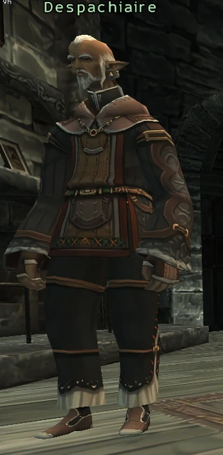
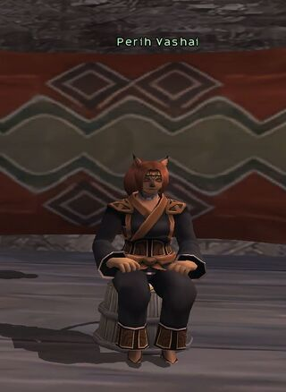
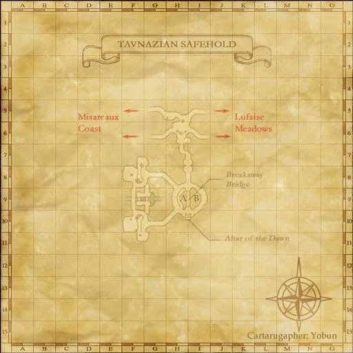
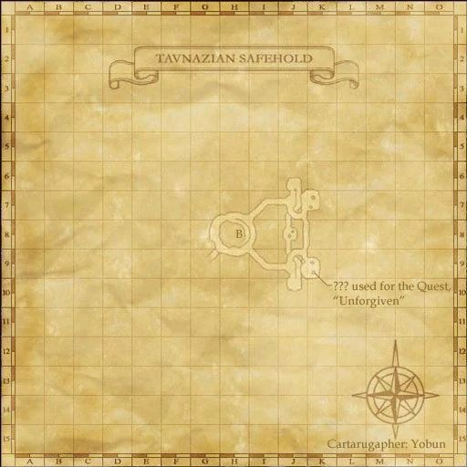
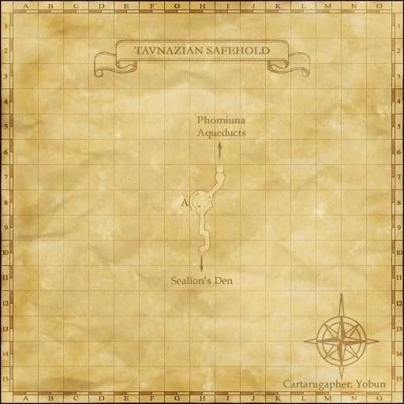
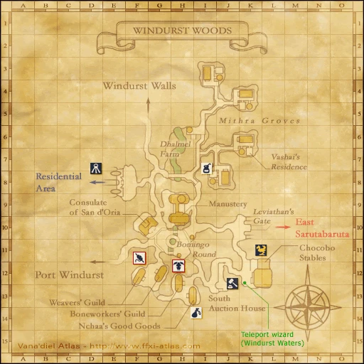
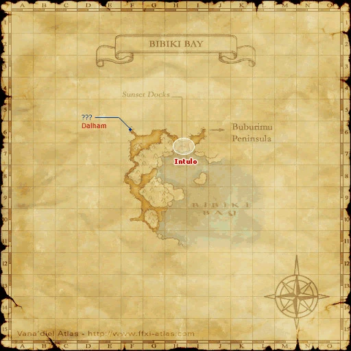
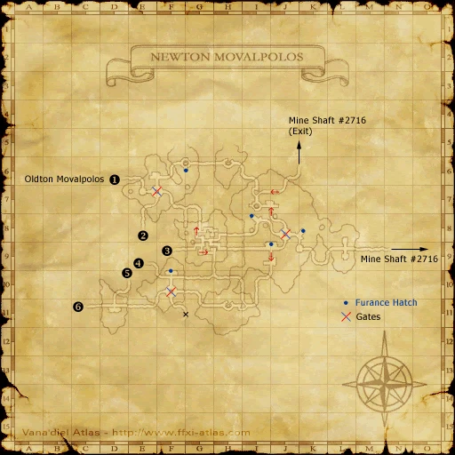
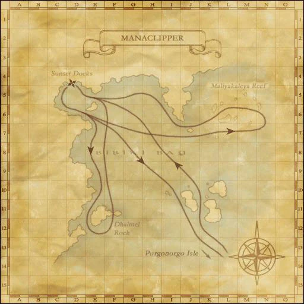

Before you begin
- Complete CoP 5-2.
- One Gold Key per character, used after the battlefield and first Cid report.
- Snow Lilies are the convenient transport option; buy the Manaclipper ticket for the correct island trip.
Starting point
Despachiaire · Tavnazian Safehold · K-10, upper floor
Era note: Historical reference cap: 60. Native battlefields use the server MAX_LEVEL instead. The referenced native battlefield permits Trusts; optional era modules or Zenith overrides can change entry rules. This is code review, not a completed Zenith battlefield test.
People in this mission





Walkthrough
- Speak to Despachiaire. Southern Legend: visit Perih Vashai in Windurst Woods K-7.
- Partners Without Fame: take the Purgonorgo-bound Manaclipper from Bibiki Bay H-7. Check the ??? Warmachine on Purgonorgo Isle at H-11.
- A Century of Hardship: enter Oldton Movalpolos for Louverance's scene. Trade a Snow Lily to Tarnotik at K-10 for direct transport to Mine Shaft #2716.
- Choose A Century of Hardship. Defeat Chekochuk, Movamuq, Swipostik, Trikotrak and Bugbby. Silence the casters and control Bugbby while reducing the number of Moblins.
- Departures: report to Cid in Metalworks H-8 after winning. Obtain a Gold Key per character from Newton Movalpolos enemies such as Moblin Workman, Yardman or Tankman.
- Return to Mine Shaft #2716; another Snow Lily supplies a second Tarnotik trip. Trade your Gold Key to the battlefield entrance for the scene; this moves you to the exit side.
- Speak to Cid again to complete Louverance's branch. Finish the other branches if needed.
Battle and progress notes
- The Gold Key cutscene is after the battle; using it while helping another group places you at the exit.
Completion and reward
Companion of Louverance title; Louverance branch completion.
Area maps
Open a zone below, then select a map to enlarge it. Match the named floors and grid coordinates in the steps; these are reference area maps, not a live position tracker.
Tavnazian Safehold









Windurst Woods



Bibiki Bay



Oldton Movalpolos


Newton Movalpolos



Metalworks


Manaclipper



Zone guides
- Tavnazian Safehold
- Windurst Woods
- Bibiki Bay
- Oldton Movalpolos
- Newton Movalpolos
- Mine Shaft #2716
- Metalworks
- Manaclipper
References
- HorizonXI: Promathia Mission 5-3/Louverance's Path
- HorizonXI: Tarnotik
- HorizonXI: Newton Movalpolos/Navigation
- HorizonXI: Gold Key
- Reviewed mission implementation
- Reviewed mission implementation
- Reviewed mission implementation
Steps are an original summary of the linked walkthrough and reviewed source. Other servers’ bonus rewards are not included. How to read requirements, waits and battlefield notes.